Cambridge A-level theory notes, prepared by Dr Hamdeni.
15.2a
Logic circuits: half adders and full adders
General idea
Logic gates can be combined to build circuits that perform arithmetic in hardware.
Binary addition is a core operation in processors, so we design circuits that add bits efficiently.
At each bit position in a multi-bit addition there are two outputs:
a sum bit for that position
a carry bit passed to the next more significant bit.
In a multi-bit adder, identical adder stages are chained so that the carry out from each stage becomes the carry in of the next one; these stages are implemented as full adders with three inputs and two outputs.
The half adder
A half adder adds two single input bits, normally called A and B.
Outputs:
S (sum) for the bit position
C (carry) that moves to the next position.
Behaviour:
0 + 0 gives S = 0 and C = 0
0 + 1 or 1 + 0 gives S = 1 and C = 0
1 + 1 gives S = 0 and C = 1 (because 1 + 1 = 10 in binary).
The logic functions are:
C behaves as A.B (AND)
S behaves as A XOR B (exclusive OR).
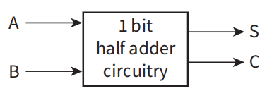
Half adder circuit
Inputs A and B are fed to an XOR gate to produce the sum output S and to an AND gate to produce the carry output C.
The circuit therefore implements single-bit binary addition for two inputs.
Half adder truth table
Inputs
Outputs
A
B
S (sum)
C (carry)
0
0
0
0
0
1
1
0
1
0
1
0
1
1
0
1
For two input bits A and B, the table shows the resulting sum S and carry C.
The sum is 1 when exactly one input is 1, while the carry is 1 only when both inputs are 1.
In exam-style questions, truth tables often contain extra columns for intermediate signals (for example P, Q, R, S); to fill them correctly, each gate output must be evaluated step by step before writing the final output column.
In integrated circuit design it is often useful to implement everything using a single type of gate such as the NAND gate.
A half adder can be reconstructed entirely from NAND gates by building equivalent structures for XOR and AND.
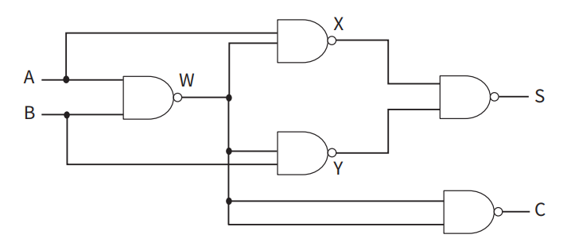
Half adder using only NAND gates
Multiple NAND gates create internal signals that are combined to produce the sum S and carry C.
The truth table remains identical to the simpler XOR plus AND implementation.
The full adder
When adding multi-bit binary numbers, the circuit must include the carry in from the previous bit position.
A full adder has three inputs:
A and B, the bits being added at this position
Cin, the carry coming from the previous position.
Outputs:
S, the sum for this position
Cout, the carry that goes to the next position.
To build an n-bit adder, n full adders are connected in series so that the carry out from each stage becomes the carry in of the next stage, starting from a carry in of 0 at the least significant bit.
Full adder truth table
Inputs
Outputs
A
B
Cin
S (sum)
Cout
0
0
0
0
0
0
0
1
1
0
0
1
0
1
0
0
1
1
0
1
1
0
0
1
0
1
0
1
0
1
1
1
0
0
1
1
1
1
1
1
The table lists all eight combinations of A, B and Cin.
For each case the sum S is the least significant bit of A + B + Cin, and Cout is the carry bit.
A standard implementation of a full adder uses:
two half adders, to add A and B then add Cin
an OR gate to combine the intermediate carries into Cout.
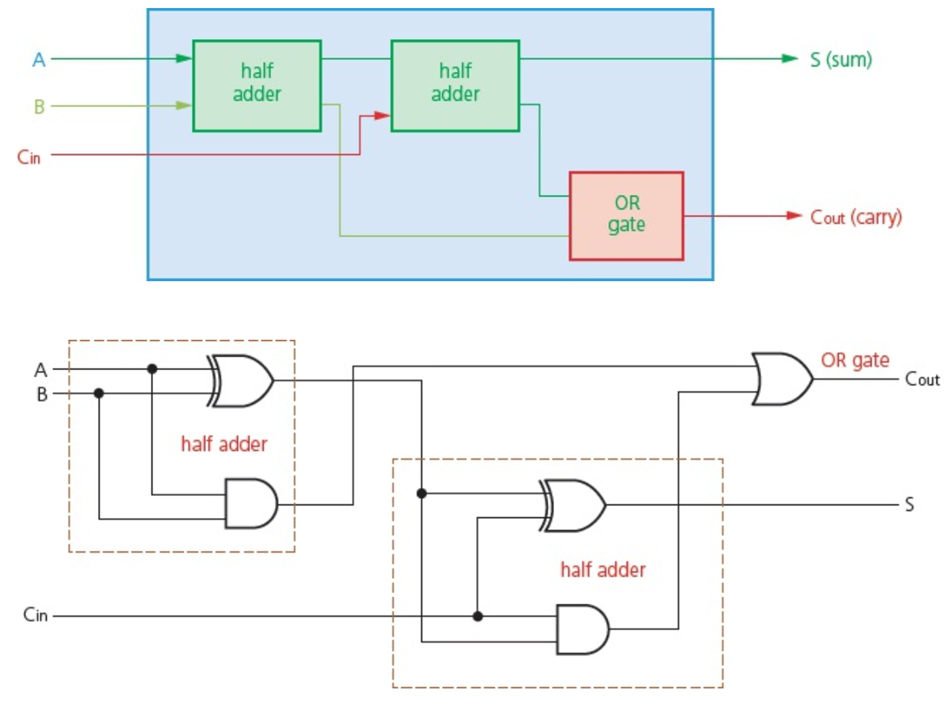
Full adder built from half adders
The first half adder adds A and B to produce an intermediate sum and carry.
The second half adder adds this intermediate sum to Cin, and an OR gate combines the two carry outputs into Cout.
As with the half adder, the full adder can be re-expressed using only NAND gates, which simplifies fabrication on chips.
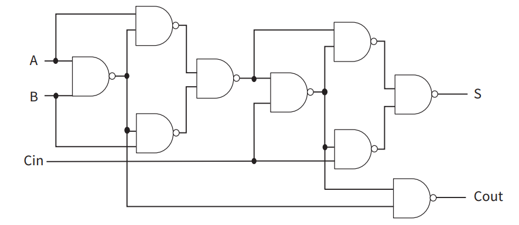
Full adder using only NAND gates
Inputs A, B and Cin pass through several layers of NAND gates.
Internal signals are combined so that the final outputs behave exactly like a full adder truth table, even though only one gate type is used.
15.2b
Sequential logic: SR and JK flip-flops
From combinational to sequential logic
In a combinational circuit, outputs depend only on current inputs. Inputs are combined using logic gates to produce 0 or 1
In a sequential circuit, outputs depend on both:
current inputs
previous stored outputs (the internal past state).
Sequential circuits can remember bits. They are used for storage elements when we want to store the status of one bit like the case for registers and counters.
A collection of flip-flop cells (each storing 1 bit) can be combined to form larger memories such as registers and RAM, with one flip-flop per stored bit.
The SR flip-flop
An SR flip-flop (or SR latch) is a 1 bit memory element.
It can be built from:
two cross-coupled NOR gates or
two cross-coupled NAND gates.
Inputs:
S (set)
R (reset).
Outputs:
Q, the stored bit
Qʹ, the complement of Q.
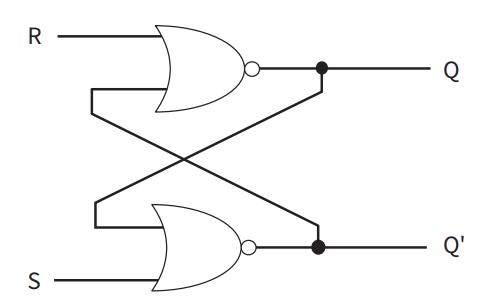
SR flip-flop using NOR gates
Two NOR gates are cross-coupled so that each output feeds back to the other gate.
Inputs S and R control whether the stored output Q is set to 1 or reset to 0,
and the feedback maintains the stored state when both S and R are inactive.
Stable states:
Q = 1 and Qʹ = 0 (set state)
Q = 0 and Qʹ = 1 (reset state).
For the NOR-based SR flip-flop:
S = 0 and R = 0 cause the flip-flop to hold its previous state
S = 1 and R = 0 set Q to 1
S = 0 and R = 1 reset Q to 0
S = 1 and R = 1 is an invalid input combination and must be avoided.
Analogy: Think of the SR flip-flop as a mechanical toggle switch on a wall. If you don't touch it (S=0, R=0), it stays exactly where it was. If you push it up (S=1), it stays up even after you move your hand away. The "Invalid State" (S=1, R=1) is like two people trying to push the switch up and down at the exact same moment—the mechanism cannot be in two places at once, so the system breaks its own rules.
The output is not just dependent on the current input values but also on the previous output. This defines a sequential circuit, such as the SR flip-flop or ‘latch’, which uses feedback to maintain a state. The circuit allows a "set" or "reset" command to be remembered even after the signal is removed.
Inputs
Initial state
Final state
Analogy
S (Set)
R (Reset)
Q
Q’
Q
Q’
Explanation
0
0
1
0
1
0
No signal is input; the light remembers it was ON and stays ON
1
0
1
0
1
0
The light is ON; you press "Turn ON" again, so it remains ON
0
1
1
0
0
1
The light is ON; you press "Turn OFF", switching it to the unset state
0
0
0
1
0
1
No signal is input; the light remembers it was OFF and stays OFF
1
0
0
1
1
0
The light is OFF; you press "Turn ON", switching it to the set state
0
1
0
1
0
1
The light is OFF; you press "Turn OFF" again, so it remains OFF
1
1
Any
Any
0
0
Invalid State: Trying to turn it ON and OFF at once; the logic fails
Key Insights from the Table
Memory and Storage: Because the flip-flop maintains its state when no new signal is input (0,0), it acts as a storage device for 1 bit
Two-State Device: The SR flip-flop is a two-state device because states where Q and Q' are the same (both 0 or both 1) are logically self-contradictory
Protection from Invalid States: Inputting S=1 and R=1 simultaneously results in an invalid state where both Q and Q' are 0; the circuit must be protected from this
The alternative NAND gate circuit for the SR flip-flop has a similar structure but the labeling is diff erent. The important diff erence is that setting is achieved with S=0 and R=1 and resetting
with R=0 and S=1.
CONCUSION:
Because the SR flip-flop retains a 1 or 0 until a change is requested, it can be used as a basic building block for memory circuits.
Weaknesses of SR design
the combination S = 1 and R = 1 is forbidden, because it tries to force both Q and Qʹ to 0 at the same time
if S and R change very close together in time, small timing differences can make the final stored state unstable or unpredictable.
==> Next section will suggest another FLIP FLOP that overcomes these weaknesses
The JK flip-flop
The JK flip-flop extends the SR design to remove the forbidden input case and to improve timing control.
Inputs:
J, a set-like control
K, a reset-like control
a clock signal that determines when Q is allowed to change.
Outputs:
Q
Qʹ.
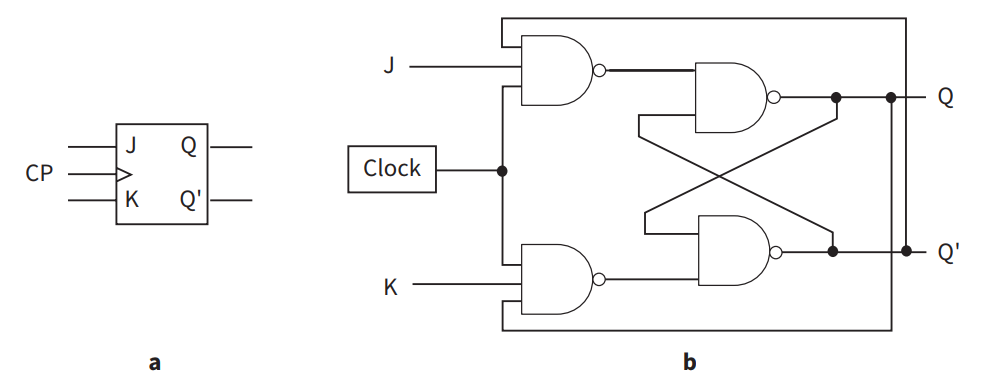
JK flip-flop symbol and circuit
The symbol shows inputs J and K, a clock input and outputs Q and Qʹ.
It is the same circuit as "SK flip flop" plus two NAND gates.
The role of the two new NAND gates is to make sure that changes in J and K affect Q only on active clock edges.
Core behaviour of a JK flip-flop on an active clock edge
J
K
Clock edge
Next Q
0
0
↑
Q unchanged
1
0
↑
1 (set)
0
1
↑
0 (reset)
1
1
↑
Q toggles
When the clock edge occurs, the values of J and K determine how Q changes: hold, set, reset or toggle.
The JK flip-flop overcomes the weaknesses of the SR latch:
all four combinations of J and K are valid on the active clock edge
the combinations (0,0), (1,0), (0,1) and (1,1) correspond to hold, set, reset and toggle, so the behaviour of Q is fully defined for every input case.
15.2c
Boolean algebra: notation and identities
Meaning of Boolean algebra
Boolean algebra works with two logic values:
1 for TRUE
0 for FALSE.
In this algebra:
AND is written as A.B or simply AB
OR is written as A + B
NOT is written using a bar, for example Ā.
In Boolean algebra, expressions such as 1 + 1 are logical OR operations rather than ordinary arithmetic, so 1 + 1 evaluates to 1, not 2.
Main Boolean identities
Boolean identities are rules that always hold for logic expressions and can be used to simplify them.
Many laws have an AND version and an OR version that mirror each other.
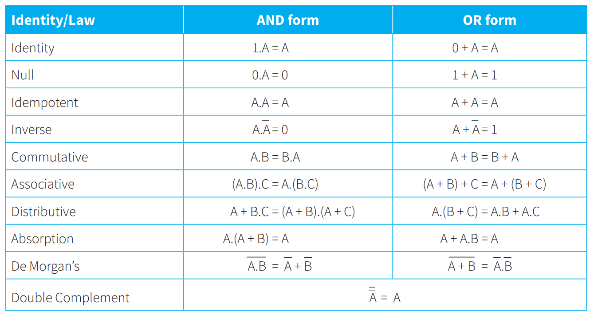
Core Boolean algebra identities
These identities provide standard moves for simplifying logic expressions or converting one form into another.
WORKED EXAMPLE 1
Using Boolean algebra to simplify an expression
Consider the expression:
X = A + Ā.B.
Objective:
show that this expression simplifies to X = A + B.
Step 1 - apply the distributive law:
rewrite A + Ā.B as (A + B).(A + Ā).
This comes from expanding (A + B).(A + Ā) and then recognising that A + Ā = 1.
Step 2 - apply the inverse law:
use A + Ā = 1 so (A + B).(A + Ā) becomes (A + B).1.
Step 3 - apply the identity law:
multiplying by 1 does not change a Boolean value, so (A + B).1 simplifies to A + B.
Conclusion:
the expression A + Ā.B is equivalent to A + B, and we have shown this using standard Boolean identities.
15.2d
From truth tables to Boolean expressions and circuits
Sum of products and minterms
The sum-of-products method systematically creates a Boolean expression from a truth table.
For each row where the output is 1:
write a product (AND) term that matches the inputs in that row
use the complement of any input that is 0 in the row.
Each such product is a
minterm
,
and the full expression is the OR of all minterms.
In exams this procedure is often described as "forming a sum-of-products expression from the minterms where the output is 1", then simplifying using the Boolean identities.
For the half adder:
the carry output C is 1 only when A = 1 and B = 1, so C = A.B
the sum output S is 1 when (A = 0, B = 1) or (A = 1, B = 0), so S = Ā.B + A.B̄.
Example fragment of a truth table
A
B
C
X
0
1
0
1
0
1
1
1
In both rows X = 1 while A is always 0 and B is always 1.
The output does not depend on C in these cases, so a single minterm Ā.B covers both rows.
Deriving expressions from circuits
We can also start with a circuit diagram and:
write the Boolean expression for each gate output
combine these expressions step by step
simplify the final result using the identities from the previous section.
WORKED EXAMPLE 2
Algebraic analysis of a NAND-based half adder
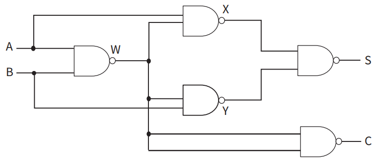
NAND-only half adder
The circuit uses several NAND gates to generate intermediate signals W, X and Y from inputs A and B.
These intermediate values are then recombined to produce the sum S and carry C.
We are given a half adder circuit built entirely from NAND gates that has internal outputs labelled W, X and Y.
Objective:
confirm that the NAND-only circuit behaves like a standard half adder by deriving expressions for its outputs.
Step 1 - interpret each NAND gate:
a NAND gate can be treated as an AND gate followed by a NOT operation
this means we can write the AND of the inputs first and then apply a complement at the end.
Step 2 - write an expression for an intermediate signal:
suppose the intermediate output W has already been expressed as a sum of products in terms of A and B
to find the output X of a NAND gate that takes A and W as inputs we first form the AND A.W
we then expand the product and simplify using distributive, inverse and idempotent laws to obtain a compact expression for A.W.
Step 3 - complete the NAND operation for X:
because the gate is NAND, the actual output is X = (A.W)̄
applying the AND version of De Morgan’s law converts this into a sum:
(A.W)̄ = Ā + W̄.
after substituting the simplified form of W̄ and tidying up, X reduces to A + B.
Step 4 - repeat for Y:
the other intermediate NAND gate produces Y in a symmetric way
by the same reasoning we obtain Y = A + B.
Step 5 - final NAND gate for the sum output:
the final NAND gate takes X and Y as inputs, so the AND at its input is X.Y = (A + B).(A + B)
rather than expanding the product, we again apply De Morgan’s law to the complement:
S = (X.Y)̄ = (A + B).(A + B) all complemented, which simplifies to Ā.B̄ + Ā.B.
this expression for S matches the sum output of a half adder:
S = Ā.B + A.B̄ (equivalent to A XOR B).
Step 6 - carry output:
a similar analysis of the carry path shows that C simplifies to A.B
this is exactly the carry behaviour required for a half adder.
Conclusion:
the NAND-only network is algebraically equivalent to the basic half adder built from XOR and AND gates.
15.2e
Karnaugh maps (K-maps)
Purpose of Karnaugh maps
A truth table that helps you visually group 1s to get a simpler Boolean expression.">Karnaugh map (K-map) is a visual method for simplifying Boolean expressions.
It reorganises a truth table into a grid where adjacent cells differ in only one input bit, which makes patterns easier to see.
The goal is to identify groups of 1s that can be merged into simpler terms in a sum-of-products expression.
K-maps are especially useful when the straightforward sum-of-products expression from the truth table is long, because grouping the 1s often leads to a minimal expression and a circuit with fewer gates.
Simple example: the OR function
For two inputs A and B with output X = A + B, the truth table is:
OR gate truth table
A
B
X = A + B
0
0
0
0
1
1
1
0
1
1
1
1
X is 1 whenever at least one of A or B is 1.
The only row with X = 0 is A = 0 and B = 0.
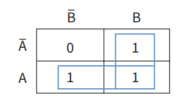
K-map for an OR gate
The 2 by 2 grid is filled with 1s in all cells except the cell corresponding to A = 0 and B = 0.
One group can cover the entire row where A = 1, giving the term A, and another group can cover the column where B = 1, giving the term B.
Combining these gives the simplified expression X = A + B.
General rules for using K-maps
Row and column labels use Gray code, so that moving to an adjacent cell changes only one input bit and every rectangle of adjacent 1s corresponds to a clean product term.
Only cells that contain a 1 are used to form groups.
Groups:
must contain 1, 2, 4, 8, and so on cells (powers of two)
must be rectangular in shape
should be as large as possible to give simpler expressions.
A single isolated 1 may form a group by itself if it cannot be combined into a larger group.
Groups may overlap, and overlapping is sometimes essential for maximum simplification.
Cells on opposite edges of the map are adjacent because the map wraps around.
For each group:
identify which input variables remain constant inside the group
drop any variable that changes within the group.
The final expression is the OR (sum) of the individual group terms.
Different valid ways of grouping the same map can give different simplified expressions, but they are all logically equivalent if they match the same truth table.
WORKED EXAMPLE 3
Using a K-map for a three-input problem
We are given a function X with three inputs A, B and C and the following truth table:
Three-input truth table for X
A
B
C
X
0
0
0
1
0
0
1
0
0
1
0
1
0
1
1
1
1
0
0
0
1
0
1
0
1
1
0
1
1
1
1
1
Whenever B = 1 the output X is 1.
When B = 0, X is 1 only in the case A = 0 and C = 0.
Initial inspection:
from the table we can already suspect that B will appear as a separate term in the simplified expression.
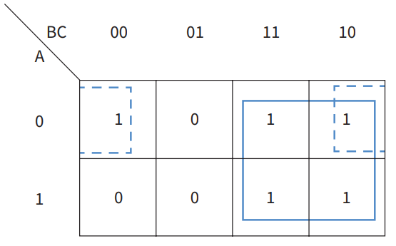
Three-input K-map
The rows correspond to A = 0 and A = 1.
The columns correspond to the pair (B, C) in Gray-code order: 00, 01, 11, 10.
The map is filled with 1s at the positions indicated by the truth table.
Step 1 - identify a group for B:
all four cells with B = 1 contain a 1, forming a group of four cells
within this group A and C vary, but B remains 1, so the corresponding term is B.
Step 2 - identify the remaining 1s:
the remaining 1 corresponds to A = 0, B = 0, C = 0
because the map wraps around, this cell can form a group of two with the cell at A = 0, B = 1, C = 0
in this two-cell group A = 0 and C = 0 stay constant, while B changes, so the term is Ā.C̄.
Step 3 - write the final simplified expression:
combining the group terms gives X = Ā.C̄ + B.
Conclusion:
the K-map has reduced a five-minterm expression from the truth table to a much simpler two-term sum-of-products expression.
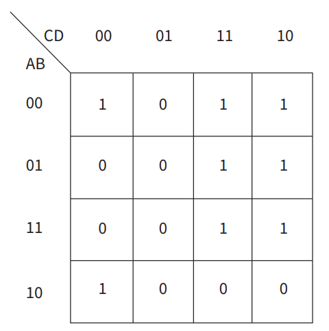
Four-input K-map
This map has two input bits on the rows and two on the columns arranged in Gray-code order.
Groups of 1s can wrap horizontally and vertically, allowing large rectangles such as groups of four or eight cells.
Applying the grouping rules leads to a simplified expression using only a few product terms instead of many minterms, and different valid groupings can still represent the same logic function.